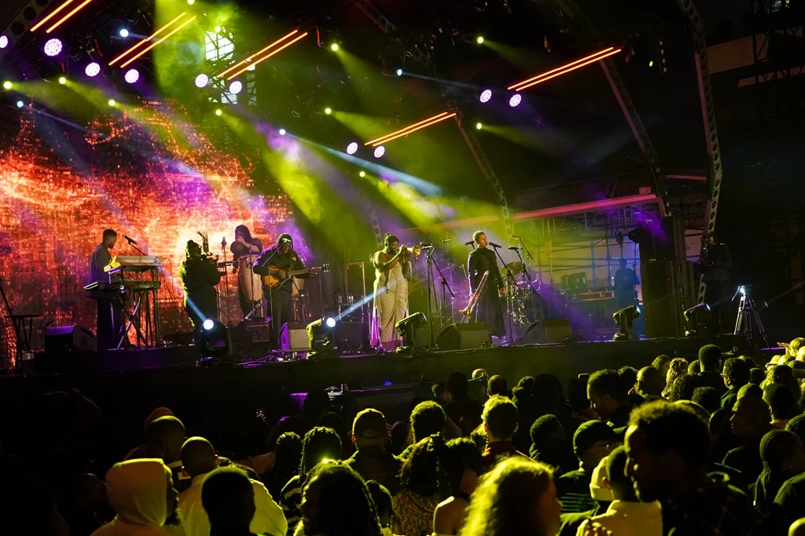
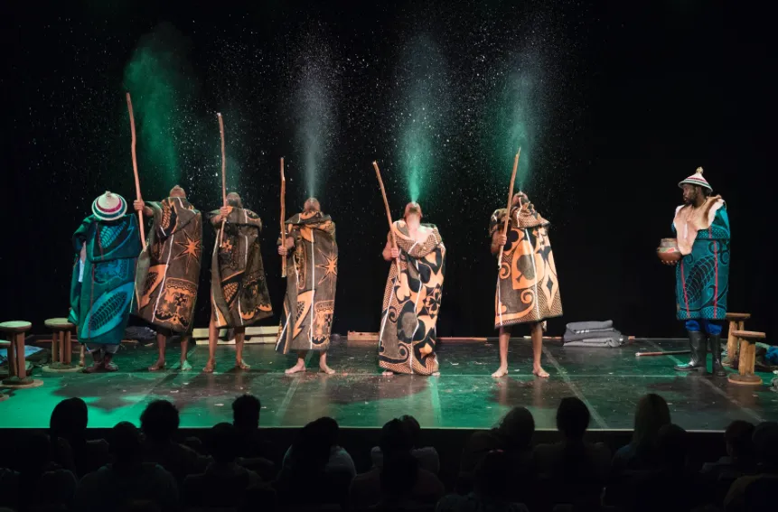

Festivals & Events
South Africa’s vibrant festivals celebrate music, art, and culture from all corners of the country. The Cape Town Jazz Festival draws international and local artists for world-class performances, while the National Arts Festival in Grahamstown showcases theatre, dance, and visual arts.
These events provide visitors with an opportunity to experience South Africa’s creativity, diversity, and lively cultural scene, making them a highlight for travelers seeking unforgettable experiences.